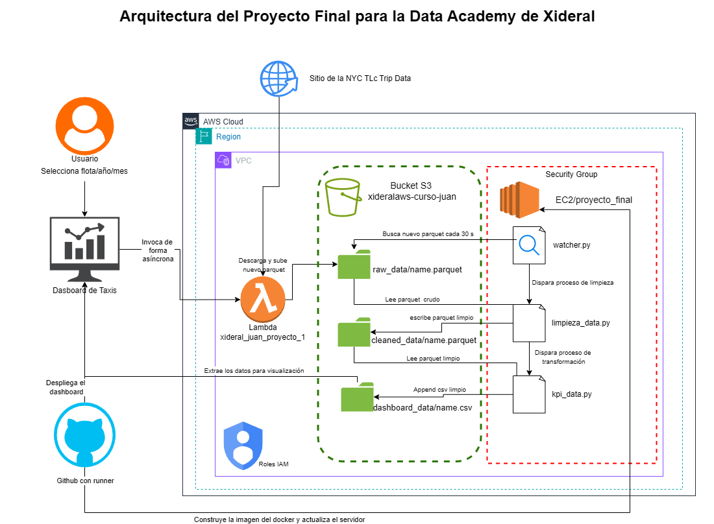
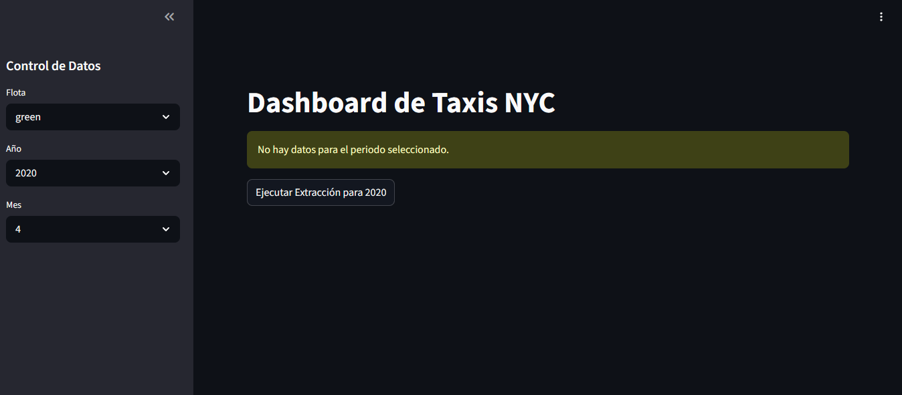
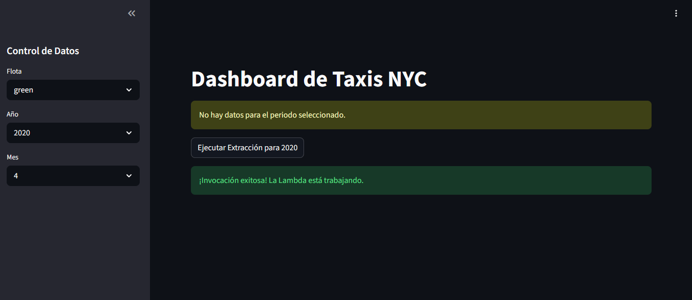
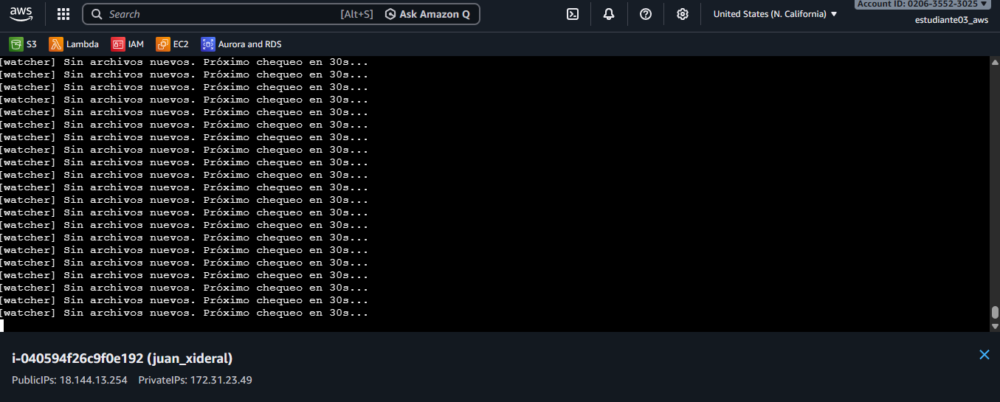
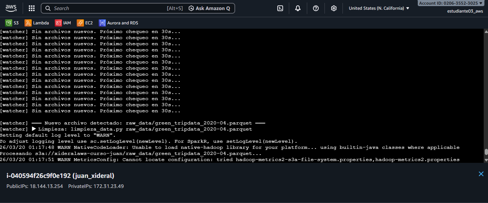
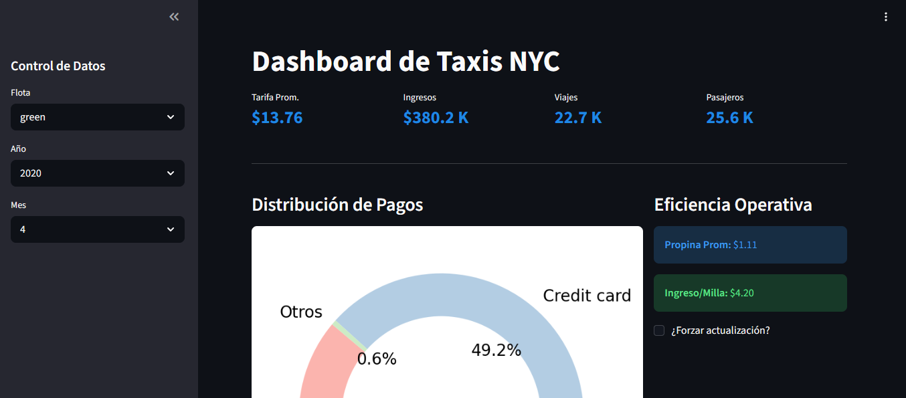
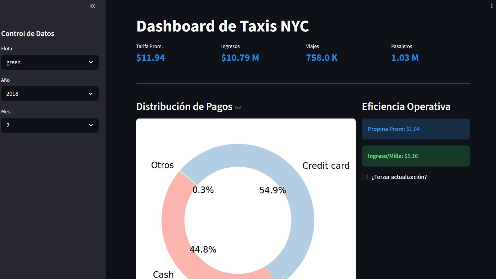

Descripción General
Taxi Analytics Pro es una aplicación web de analítica operativa y financiera para las flotas yellow y green de taxis de la ciudad de Nueva York. Los datos provienen del repositorio oficial de la NYC Taxi & Limousine Commission (TLC) , que publica registros de viajes mensuales en formato Parquet.
El sistema combina una función AWS Lambda que extrae y transforma los datos bajo demanda, un bucket S3 como almacén de CSVs preprocesados y una interfaz Streamlit que renderiza KPIs y gráficos en tiempo real. Todo el servicio se orquesta con Docker Compose garantizando alta disponibilidad.
Arquitectura del Sistema
El siguiente diagrama muestra las tres capas principales: fuente de datos pública (NYC TLC), capa de cómputo en AWS (Lambda + S3) y capa de presentación (Streamlit en Docker).

Flujo de Datos
La aplicación sigue un patrón de carga lazy: primero consulta S3; si los datos del periodo seleccionado no existen, dispara la Lambda de forma asincrónica para que los genere en background sin bloquear la UI.
Selección de filtros
El usuario elige flota (yellow / green), año y mes desde la barra lateral de Streamlit.
Consulta a S3
La app busca CSVs preprocesados en s3://xideralaws-curso-juan/dashboard_data/.
Si existen, los carga con pandas en memoria.
Invocación de Lambda
Si no hay datos para el periodo, se invoca xideral_juan_proyecto_1 con
InvocationType='Event' (asincrónico). La UI notifica al usuario sin bloquearse.
Extracción y transformación
La Lambda descarga el Parquet de NYC TLC, agrega KPIs y distribución de pagos, y escribe los CSVs resultantes en S3.
Renderizado del dashboard
Al recargar, Streamlit lee los nuevos CSVs y muestra tarjetas de KPI, gráfico de dona de pagos e ingreso por milla calculado dinámicamente.
Filtrado en cliente
Los filtros subsecuentes aplican sobre DataFrames en memoria con pandas, eliminando llamadas extra a S3 y reduciendo latencia.
Preprocesamiento de Datos
Antes de que la Lambda entregue datos al dashboard, realiza una limpieza y agregación de los registros crudos de NYC TLC: elimina nulos, normaliza tipos, filtra viajes atípicos y calcula métricas derivadas como el ingreso por milla.

Exploración inicial del dataset
Inspección de columnas, tipos de dato y distribución de valores para identificar campos a limpiar antes de la agregación.

Transformación y cálculo de KPIs
Agrupación por tipo de taxi, año y mes. Cálculo de tarifa media, ingresos totales, conteo de viajes y distribución de métodos de pago.
Monitoreo del Pipeline
Para validar que la Lambda se ejecuta correctamente y escribe los resultados en S3, se implementó un watcher que observa la actividad del bucket y confirma la llegada de los archivos procesados.

Configuración del Watcher
Script de monitoreo apuntando al prefijo dashboard_data/ del bucket S3,
esperando la aparición de nuevos archivos CSV tras la invocación Lambda.

Watcher en Ejecución
El watcher detecta en tiempo real los CSVs generados por la Lambda, confirmando que el pipeline de extracción y transformación completó sin errores.
Pipeline Exitoso
Una vez que la Lambda termina, los archivos CSV aparecen en S3 y el dashboard puede consumirlos. La siguiente captura muestra la confirmación de un pipeline completo de extracción → transformación → almacenamiento ejecutado sin errores.

Ejecución exitosa del pipeline
Los CSVs de KPIs y distribución de pagos están disponibles en S3, listos para ser consumidos por el dashboard en la siguiente recarga.
Dashboard en Acción
La interfaz de Streamlit presenta tarjetas de KPI (tarifa media, ingresos totales, número de viajes y pasajeros), un gráfico de dona con la distribución de métodos de pago y una métrica de eficiencia de ingreso por milla, todo filtrable por flota, año y mes desde la barra lateral.

Taxi Analytics Pro — Vista del Dashboard
KPI cards generadas con st.metric, gráfico de dona con Matplotlib
y filtros reactivos en la barra lateral. Desplegado en Docker sobre el puerto 8501.
Patrones & Estrategias
Carga Lazy / Bajo Demanda
S3 actúa como caché. La Lambda solo se invoca cuando no hay datos para el periodo, evitando cómputo y coste innecesarios.
Invocación Asincrónica
InvocationType='Event' libera la UI inmediatamente. El usuario sigue
navegando mientras Lambda procesa en background.
Separación de Capas
Datos en S3, cómputo pesado en Lambda y presentación en Streamlit. Cada capa puede escalarse o reemplazarse de forma independiente.
Filtrado en Cliente
Los filtros de flota/año/mes operan sobre DataFrames en memoria con pandas, reduciendo llamadas al API de AWS y latencia perceptible.
Configuración por Variables de Entorno
Credenciales AWS gestionadas con python-dotenv y docker-compose env_file.
Ningún secreto se hardcodea en el código fuente.
Contenedorización Reproducible
Dockerfile con AWS CLI v2 incluido. restart: unless-stopped en Compose
garantiza disponibilidad continua del servicio.
Estructura del Proyecto
Taxi_dashboard/ ├── app.py ← Aplicación Streamlit (UI + lógica de datos) ├── requirements.txt ← Dependencias Python ├── Dockerfile ← Imagen Docker (python:3.11-slim + AWS CLI v2) ├── docker-compose.yml ← Orquestación del contenedor └── .env ← (no versionado) Credenciales AWS S3: xideralaws-curso-juan/dashboard_data/ ├── kpis/ ← CSVs con métricas agregadas (viajes, ingresos…) └── payment_type/ ← CSVs con distribución de métodos de pago